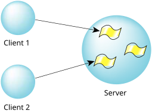

Although the client/server model is easy to understand, and the most commonly used, there are two other variations on the theme. The first is the use of multiple threads (the topic of this section), and the second is a model called server/subserver that's sometimes useful for general design, but really shines in network-distributed designs. The combination of the two can be extremely powerful, especially on a network of SMP boxes!
As we discussed in the Processes and Threads chapter, QNX OS has the ability to run multiple threads of execution in the same process. How can we use this to our advantage when we combine this with message passing?
The answer is fairly simple. We can start a pool of threads (using the thread_pool_*() functions that we talked about in the Processes and Threads chapter), each of which can handle a message from a client:

This way, when a client sends us a message, we really don't care which thread gets it, as long as the work gets done. This has a number of advantages. The ability to service multiple clients with multiple threads, versus servicing multiple clients with just one thread, is a powerful concept. The main advantage is that the kernel can multitask the server among the various clients, without the server itself having to perform the multitasking.
On a single-processor machine, having a bunch of threads running means that they're all competing with each other for CPU time.
But, on an SMP box, we can have multiple threads competing for multiple CPUs, while sharing the same data area across those multiple CPUs. This means that we're limited only by the number of available CPUs on that particular machine.